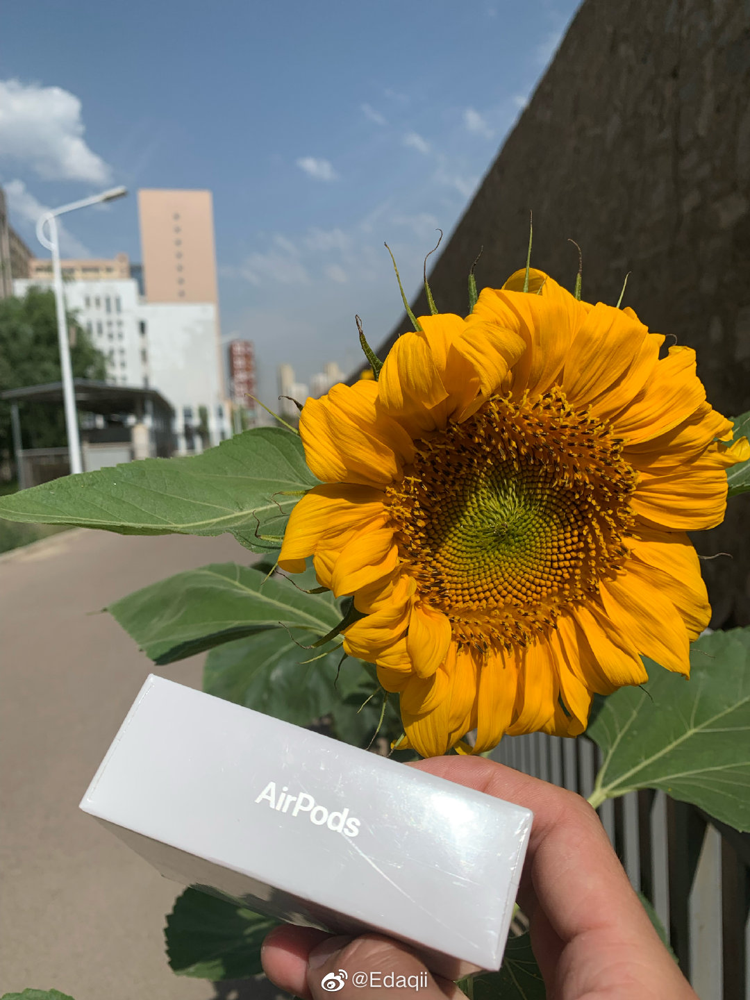
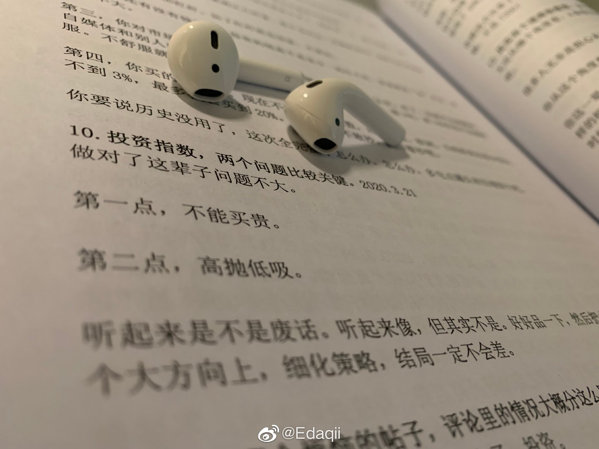

@Edaqii:已收到老大的礼物！感恩e大！！我有时候会想为什么这么喜欢e大呢？大概是一种感激与敬佩之情吧。没有跟车e大的时候，自己买过基金，买过股票，买过可转债，体验感相当之差。作为一个普通人，所谓的买点、卖点、仓位等等实在太难把握。直到遇见150和s，有了它们，所有的问题都不再是问题！更不用说e大顶级的心理按摩手法，yyds！我才发现投资其实可以很简单。踏踏实实的跟车，同时把更多的时间放在自己喜欢的事情上，人生嘛，最重要的是开心。拿快递回来的路上遇见一朵向日葵，想把它送给男神e大，每天都想祝福你，因为是节日，因为不是节日，因为天气好，因为天气不好，因为账户新高，因为跌下来又可以买了，因为踏踏实实的，因为多大点事儿，因为是你@ETF拯救世界